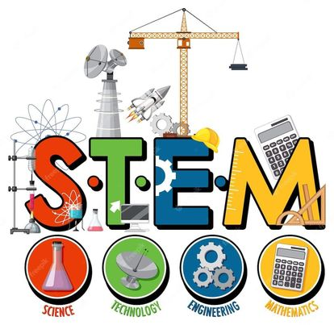

STEM
The STEM strand is one of the academic strands in the senior high school program in the Philippines, and it stands for Science, Technology, Engineering, and Mathematics. The STEM strand is designed for students who have an interest and aptitude in these fields and who wish to pursue a career in science, technology, engineering, or mathematics.
